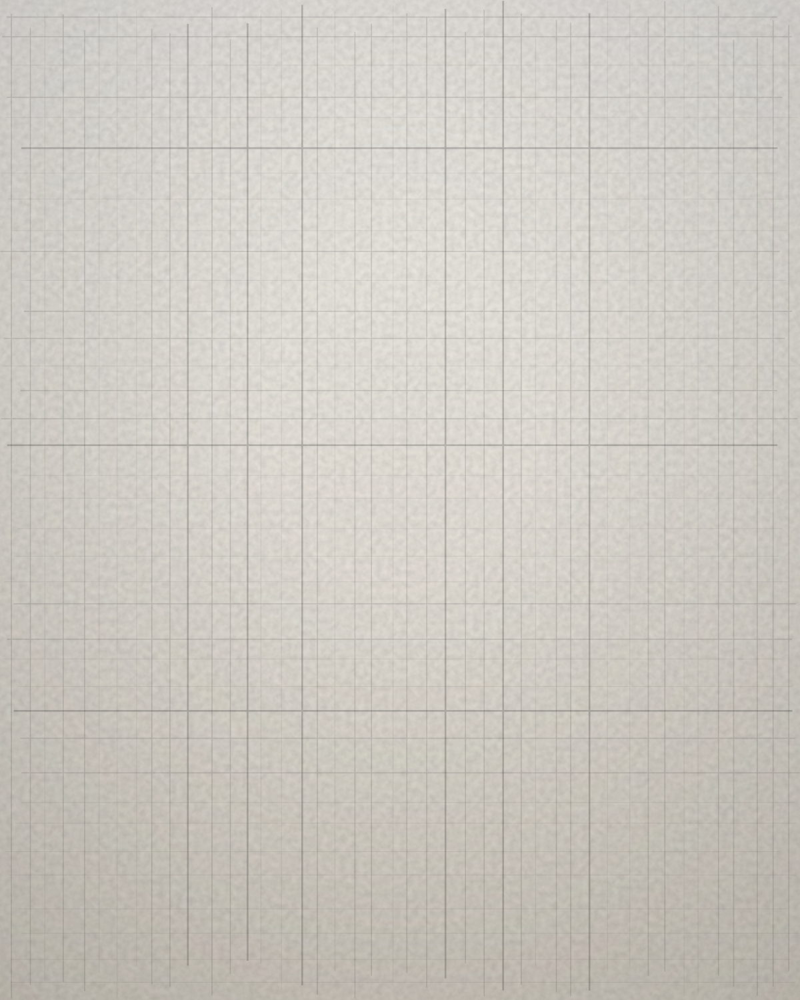
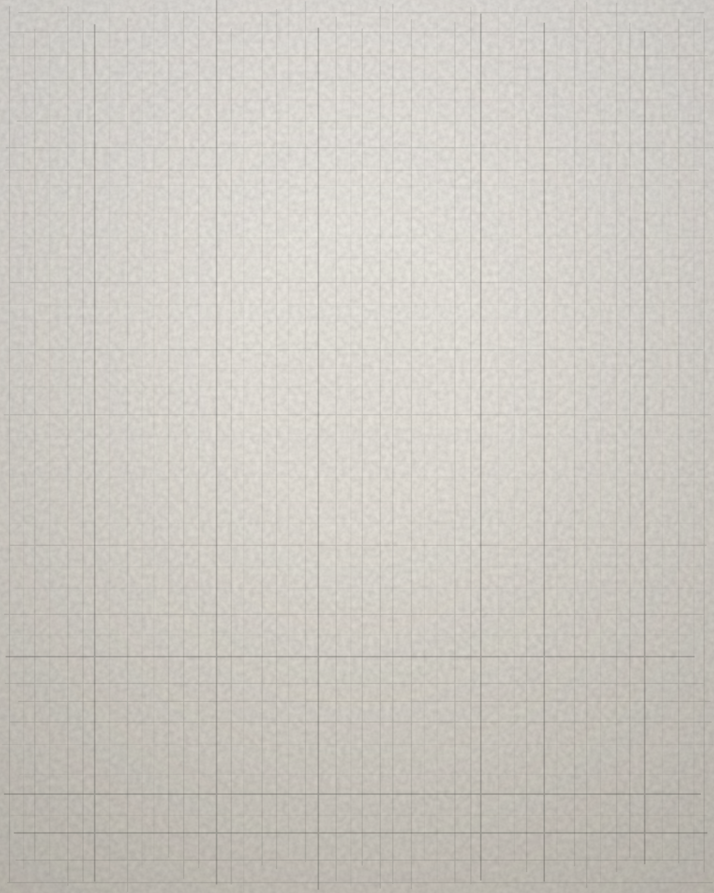
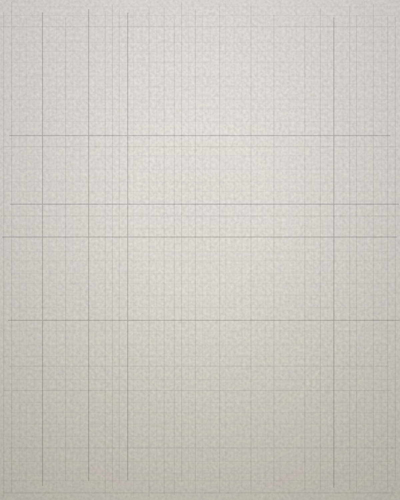
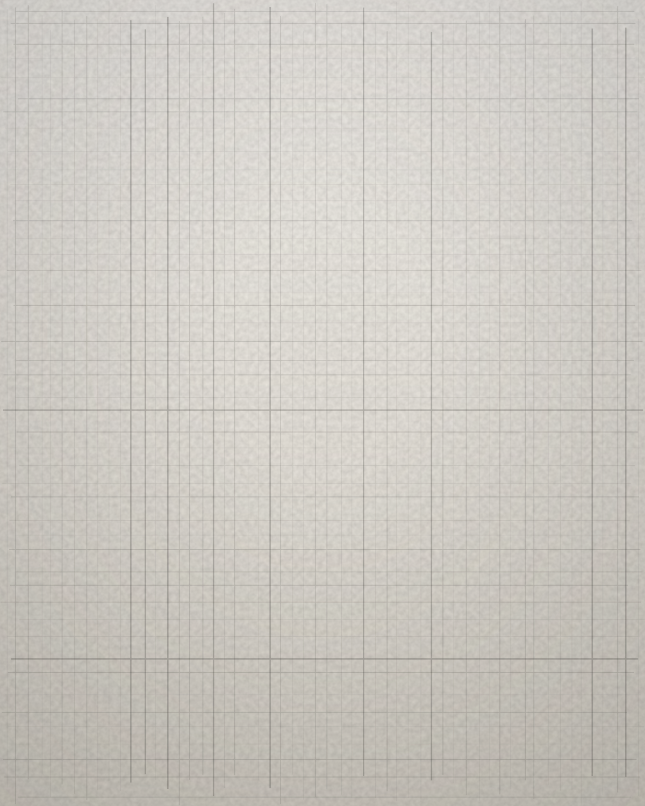

The Hands.
The Search
We look for makers who are very good and not yet found. This page fills as the search does.
Edition 01

Sinगली × MATS
Embroidery Hyderabad
This hand has worked embroidery in Hyderabad for years, mostly unnamed on the pieces it finished. Edition 01 is stitched entirely by this one hand, ten pieces, numbered, then gone.
A salary first. Then a share of what they made. The tag is where credit becomes physical.
Edition 02
In search. Nobody found yet, so nobody is named here.

Edition 02. In search.

Edition 02. In search.

Edition 02. In search.